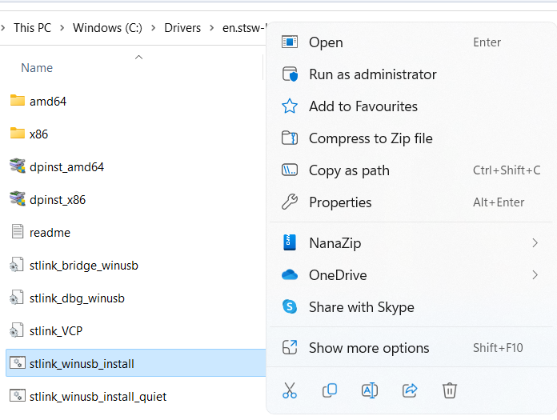
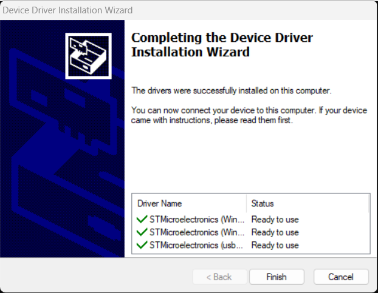
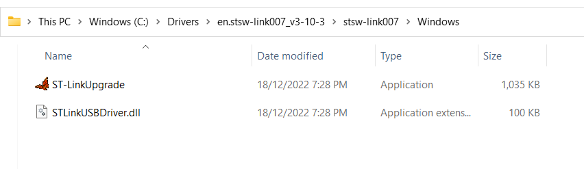
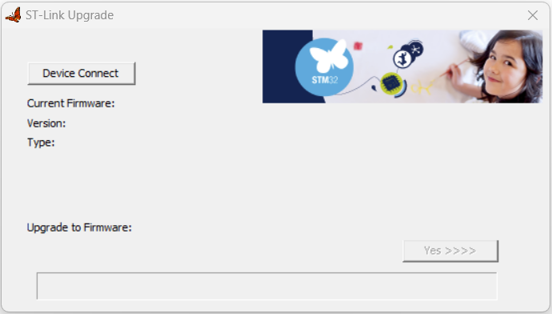
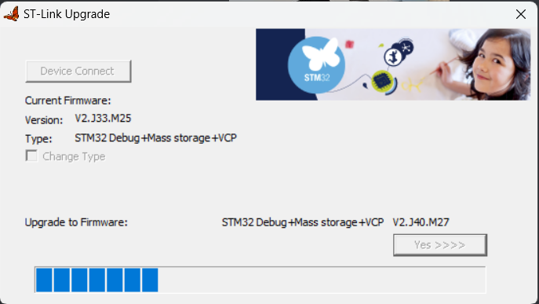

Under Development: Microcontrollers


Newer, faster, better
As technology progresses, newer, faster, and better microcontrollers become available, and therefore there is a never-ending cycle of testing and development of newer generations of microcontrollers that might suit the DCC-EX project.
Note on 3v3 vs. 5V microcontrollers
It’s important to note that with the newer generations of microcontrollers, they tend to operate at 3.3 volts rather than 5 volts.
For some, this is a non-issue as their I/O pins are designed to be 5V tolerant, meaning your existing sensors, serial devices, and I2C devices running at 5V are expected to be compatible. Outputs may need further consideration though, as a “high” signal at 3v3 can potentially not provide a high enough voltate to trigger a 5V input. Using level shifters for outputs will resolve these issues, and if you want an extra layer of caution, you can use level shifters for the inputs as well.
For others that are not 5V tolerant, using 5V accessories will cause damage to the microcontroller, so using level shifters are mandatory with these.
Note
Some devices such as the ESP01 WiFi board and HC05/06 Bluetooth boards are already 3v3 devices, so if you have set these up with level shifters, these will no longer be required when using 3v3 microcontrollers.
Considerations for new microcontrollers
When considering new microcontrollers to test and experiment with as potential candidates for EX‑CommandStation, these are the sorts of items taken into account (there are more considerations that this of course, these are just the highlights):
Architecture/code portability - how much work is required to adapt the codebase to support the architecture?
Form factor - can existing users use their existing motor shields and accessories with them?
Availability - with continuing microchip shortages impacting supply, is it still generally and easily available in quantity?
Sustainability - is the manufacturer deprecating the series?
Price - is it available at a price point that would encourage users to adopt this?
Quality - is it available with a sufficient build quality to make it reliable?
STMicroelectronics STM32 NUCLEO series
STMicroelectronics has a range of ARM based microcontrollers that are generally available, are sold from reputable resellers such as Digi-Key and Mouser, and have excellent build quality for their price.
Further to this, the NUCLEO series of development boards also provide Arduino Uno compatible header sockets, meaning existing motor (and other) shields can just plug straight in, providing they are 3v3 compatible (see note above).
NUCLEO-F411RE
The majority of the current development work with the Nucleo series has been focused on the NUCLEO-F411RE as it most closely resembles the ubiquitous Arduino Uno form factor, including having Uno compatible header sockets in addition to Morpho pins for a larger I/O footprint than the Uno. It has 50 I/O pins compared with the Uno’s 20.
For most use cases, this is a suitable substitution for an Arduino Mega also, as despite its larger footprint, the Mega only provides 20 more I/O pins than the F411RE.
There are larger NUCLEO footprints available (see below).
A good summary is available on the arm MBED Nucleo-F411RE page.
NUCLEO-F412ZG and NUCLEO-F429ZI
There are two of the larger NUCLEO devices being tested; the NUCLEO-F412ZG and NUCLEO-F429ZI.
Both of these have a much larger footprint while still retaining the Uno compatible header sockets, with 114 I/O pins.
The F412ZG is potentially suitable as a larger replacement for a Mega, with more I/O pins available, refer to the arm MBED F412ZG page.
The F429ZI has the same large footprint, however it has the added benefit of onboard Ethernet, which makes it potentially suitable for larger layouts where the WiFi limitations of the ESP01 firmware comes in to play. Note, however, that the Ethernet support for this board is currently not implemented. Refer to the arm MBED F429ZI page.
Note
Both of these boards will not compile from the Arduino IDE at present, and you will need to request the variant files and get some support from the DCC-EX dev time via Discord.
Install the STLink drivers
When using any of the NUCLEO series microcontrollers, you will need to install their STLink USB drivers in order to be able to upload software to them and use the serial monitor in either PlatformIO or the Arduino IDE.
Note
You should install these drivers before plugging your NUCLEO device in for the first time.
As per STMicroelectronics’ software licensing policy, we have been able to host a local copy of these drivers and firmware upgrade software which also includes the license agreement that you are agreeing to when you download the software.
You can obtain the zip file containing these from our website here:
Nucleo USB drivers and diagnostic firmware
Once you download and extract this zip file, you will need to install the STLink drivers located in the “en.stsw-linik009” folder.

Right click the “stlink_winusb_install.bat” file and select “Run as administrator”. You will need to click “Yes” to allow it to make changes to your computer.
{kind=link}
Click “Next” to install the drivers, and you should see this summary screen to confirm the drivers installed successfully:
{kind=link}
You can now plug your NUCLEO device in and proceed with upgrading the debugger firmware (highly recommended).
Upgrade the debugger firmware
During testing, it was noted with certain USB chipsets on Windows 11 that serial responses via the USB debugger port would stop being received by the serial monitor, even though the device continued to operate normally. The recommendation to resolve this issue is to upgrade the debugger firmware.
We recommend you upgrade the debugger firmware regardless if you experience this issue or not.
You need to ensure your NUCLEO device is plugged in to a USB port prior to commencing the upgrade.
In the same zip file as the drivers, you will need to navigate through the “en.stsw-link007_v3-10-3” folder down to the “Windows” folder, which contains an executable “ST-LinkUpgrade.exe” to upgrade the firmware on the NUCLEO devices.
{kind=link}
Double click this file to run it, which should present the upgrade window.
{kind=link}
Clicking the “Device Connect” button will attempt to connect to your NUCLEO device and display the currently installed firmware version, along with the version it will attempt to upgrade to.

Providing your NUCLEO device has been detected and is running an older version of the firmware, click “Yex >>>>” to proceed with the upgrade.
{kind=link}
Hopefully you will see the “Upgrade is successful” pop up appear when complete.

At this point, after clicking “OK” the software should display the new version of the firmware that has been applied to your device.

Adding NUCLEO support to the Arduino IDE
In order to compile for the STM32 NUCLEO platforms, you will need to add the boards to the Arduino IDE.
To do this, navigate to “File” -> “Preferences” and add this URL to the “Additional Boards Manager URLs” list:
https://github.com/stm32duino/BoardManagerFiles/raw/main/package_stmicroelectronics_index.json

Once this has been performed, the NUCLEO devices should be available to be selected in the Arduino IDE.